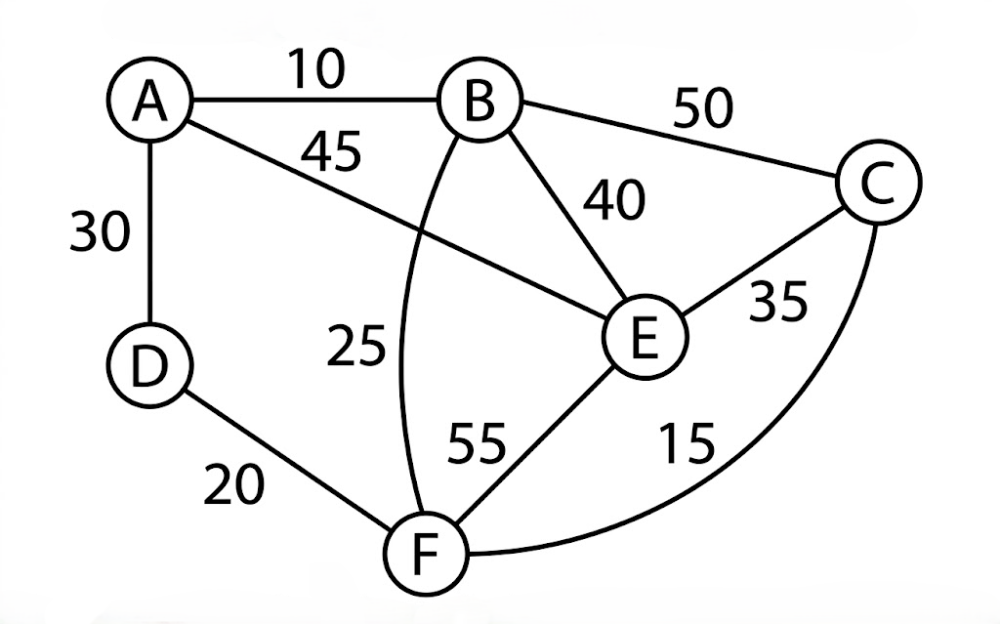

B.Tech. IV Semester
Examination, June 2023
Grading System (GS)
Max Marks: 70 | Time: 3 Hours
Note:
i) Attempt any five questions.
ii) All questions carry equal marks.
a) Describe the performance analysis of an algorithm in detail. (Unit 1)
b) Consider the following recurrence $T(n)=3T(n/3)+n$ obtain asymptotic bound using substitution method. (Unit 1)
a) Write Divide - And - Conquer recursive Quick sort algorithm and analyze the algorithm for average time complexity. (Unit 1)
b) Apply the Greedy method to solve Knapsack problem for given instance. Where $n=3$, $m=20$, $(P_{1}, P_{2}, P_{3})=(25,24,15)$ and weight $(w_{1}, w_{2}, w_{3})=(18,15,10)$. (Unit 2)
a) Write Kruskal's Algorithm. Generate the MCST for the graph given in Figure 1 by applying Kruskal's algorithm.

(Unit 2)
b) Obtain a set of optimal Huffman codes for the seven messages (M1, ..., M7) with relative frequencies $(q1,...,q7)=(4,5,7,8,10,22,15).$ Draw the decode tree for this set of codes. (Unit 2)
a) Solve the following 0/1 Knapsack problem using dynamic programming $P=(11,21,31,33)$, $W=(2,12,23,15),$ $C=42$, $n=4.$ (Unit 3)
b) Explain Floyd Warshall algorithm problem with the graph given in figure.
(Unit 3)
a) What is multistage graph problem? Discuss its solution based on dynamic programming approach. Also give a suitable algorithm and find its computing time? (Unit 3)
b) Find a solution to the 8-Queens problem using backtracking strategy. Draw the solution space using necessary bounding function. (Unit 4)
a) Solve the traveling salesperson problem using branch and bound technique.
| A | B | C | |
|---|---|---|---|
| A | 0 | 3 | 4 |
| B | 6 | 0 | 4 |
| C | 3 | 5 | 0 |
(Unit 4)
b) What is Backtracking? Discuss any one problem solved by backtracking. Also give its advantages and disadvantages. (Unit 4)
a) Compare and contrast NP-Hard and NP-Complete classes. (Unit 5)
b) Create a B-tree for the following list of elements L= {86, 50, 40, 3, 94, 10, 70, 90, 110, 113, 116} given minimization factor $t=3,$ minimum degree $=2$ and maximum degree = 5. (Unit 5)
Write short notes on any two of the following:
a) Reliability design (Unit 3)
b) Correctness proof of Greedy algorithms (Unit 2)
c) Design and complexity of Parallel Algorithms (Unit 5)
d) Graph coloring problem (Unit 4)